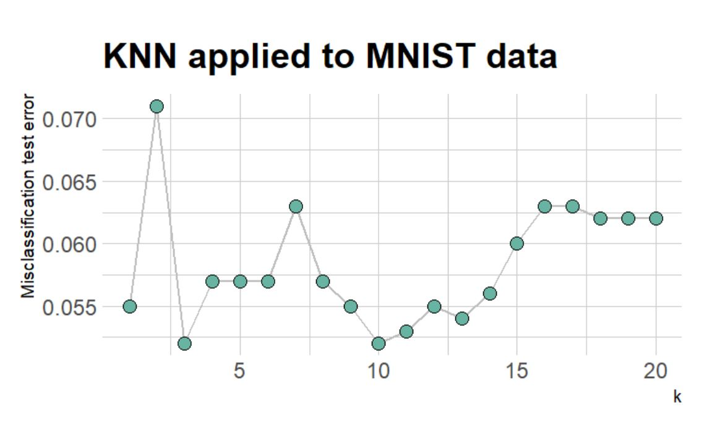
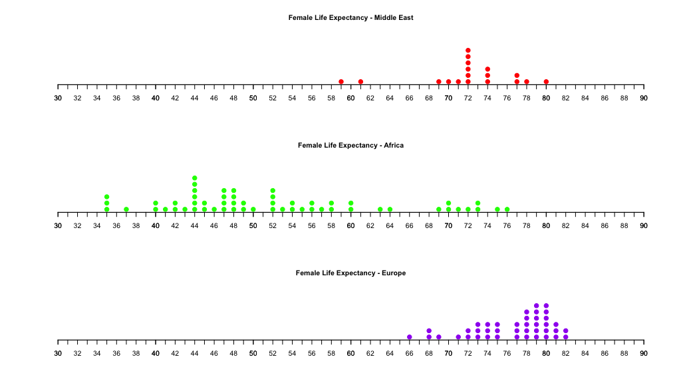
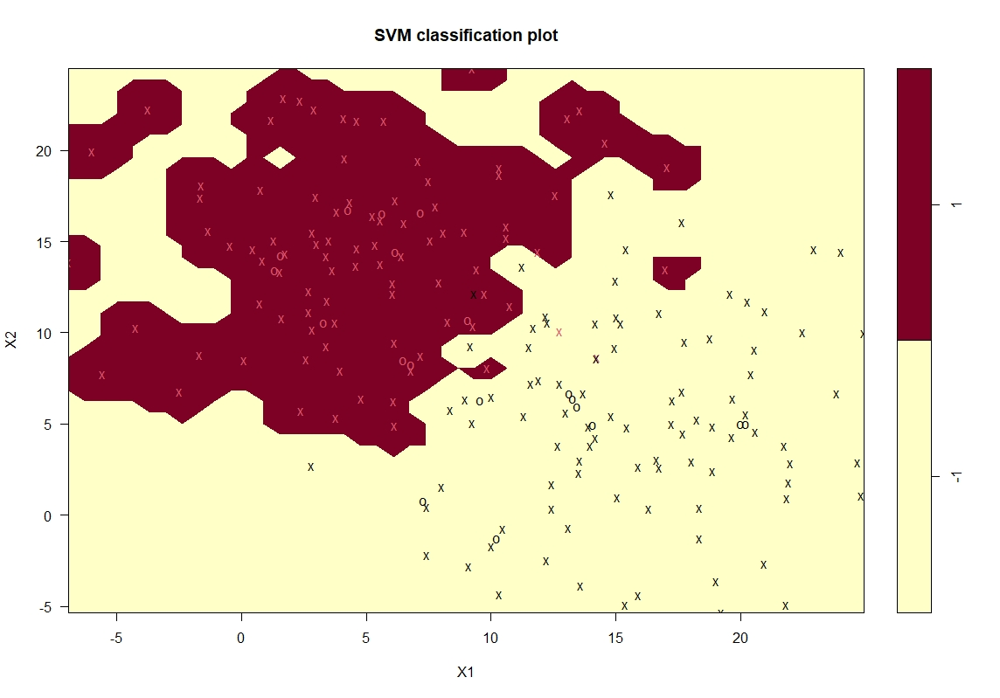
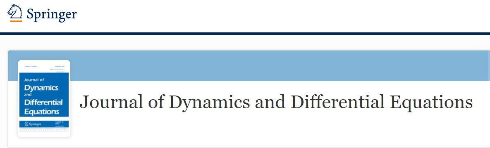

I am an applied mathematician by training. Since 2015, I have become fascinated by data, statistics, and machine learning. Now, I teach data-related courses and research the combination of Deep Learning and Partial Differential Equations at Hamilton College.
See my Hamilton College and LinkedIn pages below.
Recent Teaching

MATH 254 - Statistical Modeling and Applications
A second course in introductory statistics with a focus on applications to real data using the statistical software R. Topics include linear and logistic regression, analysis of variance, categorical data analysis, and selected topics in randomization and machine learning. Emphasis will be placed on interpretation and presentation of results.

MATH 152 Statistical Analysis of Data.
An introduction to the principles and methods of applied statistics. Topics include exploratory data analysis, sampling distributions, confidence intervals, hypothesis testing, regression analysis, analysis of variance and categorical data analysis. Extensive reliance on statistical computer software and authentic data, with a focus on investigating issues of social, structural, and institutional hierarchies.

MATH 356 Statistical Methods in Machine Learning
This course covers statistical methods in machine learning such as decision trees, random forests and support vector machines The course will use a project-based approach to give students hands-on experience using these techniques by analyzing large and complex real-world datasets. More importantly, students learn the statistical principles behind these procedures, such as loss functions, maximum likelihood estimation and bias-variance trade-off as well as why these principles matter in real world settings.
MATH 116 Calculus II
Methods of integration, improper integrals, applications of integration to volume and arc length, parametric equations, sequences and series, power series, vectors, and an introduction to 3-dimensional coordinate systems with equations of lines and planes.
Research

A determining form for the damped driven nonlinear Schrödinger equation—Fourier modes case
In this paper we show that the global attractor of the 1D damped, driven, nonlinear Schrödinger equation (NLS) is embedded in the long-time dynamics of a determining form. The determining form is an ordinary differential equation in a space of trajectories. There is a one-to-one identification with the trajectories in the global attractor of the NLS and the steady states of the determining form. We also give an improved estimate for the number of the determining modes.
Determining form and data assimilation algorithm for weakly damped and driven Korteweg–de Vries equation — Fourier modes case
We show that the global attractor of a weakly damped and driven Korteweg–de Vries equation (KdV) is embedded in the long-time dynamics of an ordinary differential equation called a determining form. In particular, there is a one-to-one identification of the trajectories in the global attractor of the damped and driven KdV and the steady state solutions of the determining form. Moreover, we analyze a data assimilation algorithm (down-scaling) for the weakly damped and driven KdV. We show that given a certain number of low Fourier modes of a reference solution of the KdV equation, the algorithm recovers the full reference solution at an exponential rate in time.

A Determining Form for the Subcritical Surface Quasi-Geostrophic Equation
We construct a determining form for the surface quasi-geostrophic (SQG) equation with subcritical dissipation. In particular, we show that the global attractor for this equation can be embedded in the long-time dynamics of an ordinary differential equation (ODE) called a determining form. Indeed, there is a one-to-one correspondence between the trajectories in the global attractor of the SQG equation and the steady state solutions of the determining form. The determining form is a true ODE in the sense that its vector field is Lipschitz. This is shown by combining De Giorgi techniques and elementary harmonic analysis. Finally, we provide elementary proofs of the existence of time-periodic solutions, steady state solutions, as well as the existence of finitely many determining parameters for the SQG equation.
Safety Prediction Model for Reinforced Highway Slope using a Machine Learning Method
Recycled plastic pin (RPP) has been proved to be an effective and inexpensive solution for shallow slope stabilization. Current practice suggests conducting numerical modeling to find out the desired factor of safety (FS) using RPP in the design of landslide repair. While the slope stability is heavily dependent on soil strength parameters and slope geometry, RPP length and spacing can also play a significant role in reaching the target factor of safety for the highway slope. During this study, a safety prediction model was developed using both statistical and machine learning (ML) approaches to use RPP in slope stabilization. Initially, parametric study was conducted using five different soil strengths, six slope heights, three slope ratios, three RPP lengths, and five RPP spacing configurations. Using the strength reduction techniques of Finite Element Modeling Software PLAXIS 2D, FS was determined for more than 1,000 combinations. Afterwards, a statistical approach was undertaken to determine a safety prediction model containing all possible parameters. Finally, an ML approach was conducted for safety model. The ML approach was found to be more accurate than the classical statistical approach with 85% accuracy of predicting the FS for an RPP reinforced highway slope. The developed model was validated against the values obtained from the numerical modeling, which indicated that the SF obtained from the developed model was in good agreement with those from finite element method (FEM) analysis.
Get In Touch
-
Address
198 College Hill Rd.
Christian A. Johnson Hall 107
Clinton, NY 13323
United States
-
Phone
315-859-4551
-
Email
tsadigov@hamilton.edu
{kind=link}
{kind=link}
{kind=link}
{kind=link}